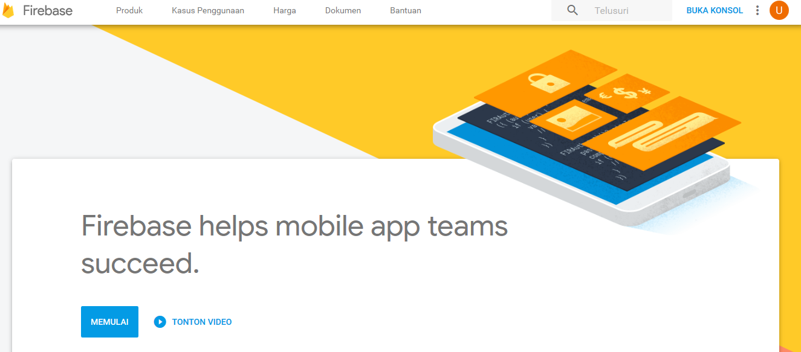
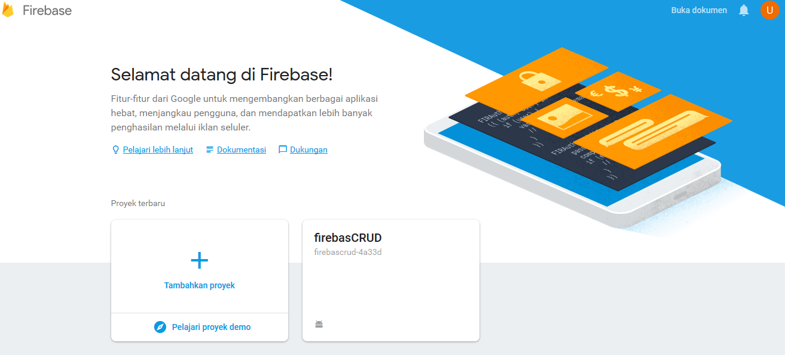
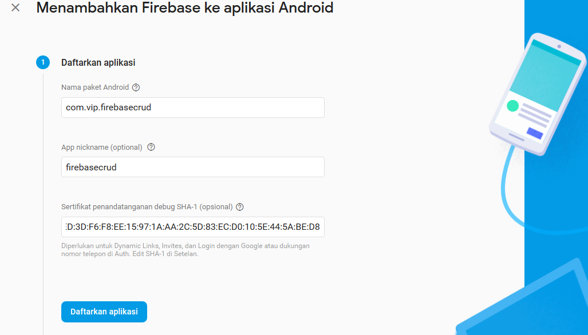
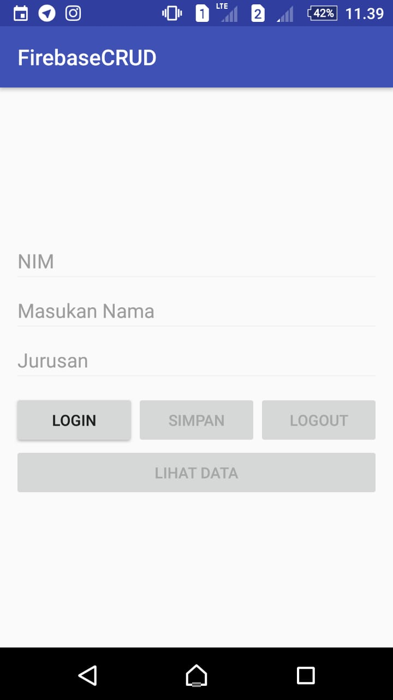
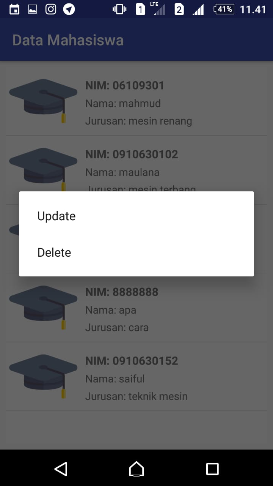

Firebase CRUD
Kemampuan akhir yang diharapkan
Setelah melakukan praktikum ini mahasiswa mampu :
- Membuat realtime database dan authentication pada firebase
- Melakukan sinkronisasi firebase realtime database dengan aplikasi android
- Membuat apikasi CRUD menggunakan firebase realtime database
Dasar Teori
Firebase adalah suatu layanan dari google untuk mempermudah para pengembang-pengembang aplikasi untuk mengembangkan aplikasinya. Firebase(BaaS ‘Backend as a Service’) ini merupakan solusi yang ditawarkan oleh Google untuk mempermudah pekerjaan Developer. Dengan adanya Firebase, apps developer dapat fokus mengembangkan aplikasi tanpa harus memberikan usaha yang besar terkait pengelolaan backend.
1. Firebase Realtime Database
Firebase Realtime Database adalah sebuah cloud based NoSQL database yang tersedia secara realtime dan bisa diakses cross platform baik dari Android, iOS, maupun Web. Data pada Firebase Realtime Database disimpan dalam bentuk JSON tree yang selalu tersinkron secara realtime. Karena sifatnya yang realtime, jika ada perubahan pada database, maka semua klien yang menggunakan Realtime Database ini akan tersinkron secara otomatis. Dan juga jenis database-nya yang bertipe NoSQL, sangat cocok ketika kita ingin menyimpan data bersifat key-value pada aplikasi.
2. Firebase Authentication
Firebase authentication memberikan fungsi dalam mengelelola akun pengguna dengan cara yang mudah dan aman. Firebase Auth menawarkan beberapa metode autentikasi, termasuk email/sandi, penyedia pihak ketiga seperti Google atau Facebook, atau langsung menggunakan sistem akun Anda yang sudah ada.
Praktikum
A. Menambahkan Firebase pada project aplikasi Android
- Pada langkah pertama buat project baru dengan empty activity, seperti gambar berikut:


- Pada langkah berikutnya login/masuk pada Firebase dengan menggunakan Alamat Gmail pada link berikut ini https://firebase.google.com/?hl=id kemudian pilih
Buka Konsol

- Selanjutnya tambahkan project baru kita kedalam Firebase Console, dengan mengklik
Tambahkan proyek(+)

- Isi nama proyek, ID project dan Negara/Wilayah kalian, setelah itu klik
Buat Proyek

- Pada halaman Dashboard Firebase, disini pilih platform yang akan digunakan, klik icon berlogo android, untuk menambahkan Firebase ke dalam aplikasi Android.

- Isi nama package (wajib), nama pendek aplikasi (jika diperlukan), lalu masukan kode SHA-1 kedalam Firebase.

Untuk mendapatkan SHA-1 fingerprint, lakukan langkah-langkah berikut:
Buka kembali project Android Studio
Klik tab Gradle yang berada di sebelah kanan jendela Android Studio. Jika tidak ada isi apapun yang ditampilkan, klik Refresh all Gradle projects di bagian pojok kiri jendela Gradle
Cari dan klik nama project kalian
Masuk ke
Tasks-android-signingReport
Klik dua kali pada SigningReport sehingga console terbuka
Tunggu hingga proses selesai dan informasi SHA-1 akan ditampilkan. Salin kode SHA-1 tersebut ke halaman Firebase
- Download File Konfigurasi google-services.json, setelah selesai, pindahkan file tersebut pada direktori
app/rootyang terdapat pada project aplikasi.

- Tambahkan Firebase SDK pada file
build.gradle(Project-Level), masukan plugin dibawah ini:
dependencies {
classpath 'com.android.tools.build:gradle:3.3.2'
classpath 'com.google.gms:google-services:3.2.0'
// NOTE: Do not place your application dependencies here; they belong
// in the individual module build.gradle files
}
- Buka
bulid.gradle(app-level)lalu tambahkan library di bawah ini dalam dependencies.
dependencies {
implementation fileTree(dir: 'libs', include: ['*.jar'])
implementation 'com.android.support:appcompat-v7:27.0.2'
implementation 'com.android.support.constraint:constraint-layout:1.1.0'
implementation 'com.android.support:design:27.0.2'
implementation 'com.android.support:recyclerview-v7:27.0.2'
implementation 'com.android.support:support-v4:27.0.2'
implementation 'com.google.firebase:firebase-core:11.8.0'
implementation 'com.firebaseui:firebase-ui-auth:3.2.2'
implementation 'com.google.firebase:firebase-database:11.8.0'
implementation 'com.google.android.gms:play-services-auth:11.8.0'
testImplementation 'junit:junit:4.12'
androidTestImplementation 'com.android.support.test:runner:1.0.1'
androidTestImplementation 'com.android.support.test.espresso:espresso-core:3.0.1'
}
- Lalu tambahkan kode apply plugin: 'com.google.gms.google-services' di bagian bawah dependencies.
dependencies {
implementation fileTree(dir: 'libs', include: ['*.jar'])
implementation 'com.android.support:appcompat-v7:27.0.2'
implementation 'com.android.support.constraint:constraint-layout:1.1.0'
implementation 'com.android.support:design:27.0.2'
implementation 'com.android.support:recyclerview-v7:27.0.2'
implementation 'com.android.support:support-v4:27.0.2'
implementation 'com.google.firebase:firebase-core:11.8.0'
implementation 'com.firebaseui:firebase-ui-auth:3.2.2'
implementation 'com.google.firebase:firebase-database:11.8.0'
implementation 'com.google.android.gms:play-services-auth:11.8.0'
testImplementation 'junit:junit:4.12'
androidTestImplementation 'com.android.support.test:runner:1.0.1'
androidTestImplementation 'com.android.support.test.espresso:espresso-core:3.0.1'
}
apply plugin: 'com.google.gms.google-services'
B. Membuat Fitur Create, Read, Update, dan Delete Data pada Firebase
- Buka layout
activity_main.xmluntuk membuat halaman menu aplikasinya terlebih dahulu dengan menyalin kode berikut.
<?xml version="1.0" encoding="utf-8"?>
<RelativeLayout xmlns:android="http://schemas.android.com/apk/res/android"
xmlns:app="http://schemas.android.com/apk/res-auto"
xmlns:tools="http://schemas.android.com/tools"
android:layout_width="match_parent"
android:layout_height="match_parent"
android:layout_margin="12dp"
tools:context="com.vip.firebasecrud.ui.MainActivity">
<ProgressBar
android:id="@+id/progress"
style="?android:attr/progressBarStyle"
android:layout_width="wrap_content"
android:layout_height="wrap_content"
android:layout_alignParentEnd="false"
android:layout_alignParentLeft="false"
android:layout_alignParentRight="false"
android:layout_alignParentStart="false"
android:layout_alignParentTop="false"
android:layout_centerHorizontal="true"
android:layout_centerVertical="true" />
<LinearLayout
android:layout_width="match_parent"
android:layout_height="match_parent"
android:gravity="center"
android:orientation="vertical">
<EditText
android:id="@+id/nim"
android:layout_width="match_parent"
android:layout_height="wrap_content"
android:ems="10"
android:hint="NIM"
android:inputType="textPersonName" />
<EditText
android:id="@+id/nama"
android:layout_width="match_parent"
android:layout_height="wrap_content"
android:ems="10"
android:hint="Masukan Nama"
android:inputType="textPersonName" />
<EditText
android:id="@+id/jurusan"
android:layout_width="match_parent"
android:layout_height="wrap_content"
android:ems="10"
android:hint="Jurusan"
android:inputType="textPersonName" />
<LinearLayout
android:layout_width="match_parent"
android:layout_height="wrap_content"
android:layout_marginTop="8dp"
android:orientation="horizontal">
<Button
android:id="@+id/login"
android:layout_width="match_parent"
android:layout_height="wrap_content"
android:layout_weight="1"
android:text="Login" />
<Button
android:id="@+id/save"
android:layout_width="match_parent"
android:layout_height="wrap_content"
android:layout_weight="1"
android:text="Simpan" />
<Button
android:id="@+id/logout"
android:layout_width="match_parent"
android:layout_height="wrap_content"
android:layout_weight="1"
android:text="Logout" />
</LinearLayout>
<Button
android:id="@+id/showdata"
android:layout_width="match_parent"
android:layout_height="wrap_content"
android:text="Lihat Data" />
</LinearLayout>
</RelativeLayout>
- Tambahkan kode berikut ini pada
MainActivity.java
public class MainActivity extends AppCompatActivity implements View.OnClickListener{
//Deklarasi Variable
private ProgressBar progressBar;
private EditText NIM, Nama, Jurusan;
private FirebaseAuth auth;
private Button Logout, Simpan, Login, ShowData;
//Membuat Kode Permintaan
private int RC_SIGN_IN = 1;
@Override
protected void onCreate(Bundle savedInstanceState) {
super.onCreate(savedInstanceState);
setContentView(R.layout.activity_main);
progressBar = findViewById(R.id.progress);
progressBar.setVisibility(View.GONE);
//Inisialisasi ID (Button)
Logout = findViewById(R.id.logout);
Logout.setOnClickListener(this);
Simpan = findViewById(R.id.save);
Simpan.setOnClickListener(this);
Login = findViewById(R.id.login);
Login.setOnClickListener(this);
ShowData = findViewById(R.id.showdata);
ShowData.setOnClickListener(this);
auth = FirebaseAuth.getInstance(); //Mendapakan Instance Firebase Autentifikasi
//Inisialisasi ID (EditText)
NIM = findViewById(R.id.nim);
Nama = findViewById(R.id.nama);
Jurusan = findViewById(R.id.jurusan);
/*
* Mendeteksi apakah ada user yang masuk, Jika tidak, maka setiap komponen UI akan dinonaktifkan
* Kecuali Tombol Login. Dan jika ada user yang terautentikasi, semua fungsi/komponen
* didalam User Interface dapat digunakan, kecuali tombol Logout
*/
if(auth.getCurrentUser() == null){
defaultUI();
}else {
updateUI();
}
}
//Tampilan Default pada Activity jika user belum terautentikasi
private void defaultUI(){
Logout.setEnabled(false);
Simpan.setEnabled(false);
ShowData.setEnabled(false);
Login.setEnabled(true);
NIM.setEnabled(false);
Nama.setEnabled(false);
Jurusan.setEnabled(false);
}
//Tampilan User Interface pada Activity setelah user Terautentikasi
private void updateUI(){
Logout.setEnabled(true);
Simpan.setEnabled(true);
Login.setEnabled(false);
ShowData.setEnabled(true);
NIM.setEnabled(true);
Nama.setEnabled(true);
Jurusan.setEnabled(true);
progressBar.setVisibility(View.GONE);
}
// Mengecek apakah ada data yang kosong
private boolean isEmpty(String s){
return TextUtils.isEmpty(s);
}
protected void onActivityResult(int requestCode, int resultCode, Intent data) {
super.onActivityResult(requestCode, resultCode, data);
// RC_SIGN_IN adalah kode permintaan yang Anda berikan ke startActivityForResult, saat memulai masuknya arus.
if (requestCode == RC_SIGN_IN) {
//Berhasil masuk
if (resultCode == RESULT_OK) {
Toast.makeText(MainActivity.this, "Login Berhasil", Toast.LENGTH_SHORT).show();
updateUI();
}else {
progressBar.setVisibility(View.GONE);
Toast.makeText(MainActivity.this, "Login Dibatalkan", Toast.LENGTH_SHORT).show();
}
}
}
@Override
public void onClick(View v) {
switch (v.getId()){
case R.id.login:
// Statement program untuk login/masuk
startActivityForResult(AuthUI.getInstance()
.createSignInIntentBuilder()
//Memilih Provider atau Method masuk yang akan kita gunakan
.setAvailableProviders(Collections.singletonList(new AuthUI.IdpConfig.GoogleBuilder().build()))
.setIsSmartLockEnabled(false)
.build(),
RC_SIGN_IN);
progressBar.setVisibility(View.VISIBLE);
break;
case R.id.save:
//Mendapatkan UserID dari pengguna yang Terautentikasi
String getUserID = auth.getCurrentUser().getUid();
//Mendapatkan Instance dari Database
FirebaseDatabase database = FirebaseDatabase.getInstance();
DatabaseReference getReference;
//Menyimpan Data yang diinputkan User kedalam Variable
String getNIM = NIM.getText().toString();
String getNama = Nama.getText().toString();
String getJurusan = Jurusan.getText().toString();
getReference = database.getReference(); // Mendapatkan Referensi dari Database
// Mengecek apakah ada data yang kosong
if(isEmpty(getNIM) || isEmpty(getNama) || isEmpty(getJurusan)){
//Jika Ada, maka akan menampilkan pesan singkan seperti berikut ini.
Toast.makeText(MainActivity.this, "Data tidak boleh ada yang kosong", Toast.LENGTH_SHORT).show();
}else {
/*
Jika Tidak, maka data dapat diproses dan meyimpannya pada Database
Menyimpan data referensi pada Database berdasarkan User ID dari masing-masing Akun
*/
getReference.child("Admin").child(getUserID).child("Mahasiswa").push()
.setValue(new data_mahasiswa(getNIM, getNama, getJurusan))
.addOnSuccessListener(this, new OnSuccessListener() {
@Override
public void onSuccess(Object o) {
//Peristiwa ini terjadi saat user berhasil menyimpan datanya kedalam Database
NIM.setText("");
Nama.setText("");
Jurusan.setText("");
Toast.makeText(MainActivity.this, "Data Tersimpan", Toast.LENGTH_SHORT).show();
}
});
}
break;
case R.id.logout:
// Statement program untuk logout/keluar
AuthUI.getInstance()
.signOut(this)
.addOnCompleteListener(new OnCompleteListener() {
@Override
public void onComplete(@NonNull Task task) {
Toast.makeText(MainActivity.this, "Logout Berhasil", Toast.LENGTH_SHORT).show();
finish();
}
});
break;
}
}
}
Pada aplikasi ini terdapat empat Button, yaitu Login, Simpan, Logout, dan Lihat Data. Penyimpanan data dilakukan pada layout activity_main.xml yang terdiri dari tiga EditText sebagai tempat masukan informasi yaitu NIM, Nama, dan Jurusan, serta sebuah Button Simpan Data.
- Selanjutnya, buat model Mahasiswa terlebih dahulu bernama data_mahasiswa.java pada
models/data_mahasiswa.java. Fungsi class ini adalah untuk menyimpan atribut-atribut dari data mahasiswa yang dimasukkan, serta beberapa method getter dan setter.
public class data_mahasiswa {
//Deklarasi Variable
private String nim;
private String nama;
private String jurusan;
private String key;
public String getKey() {
return key;
}
public void setKey(String key) {
this.key = key;
}
public String getNim() {
return nim;
}
public void setNim(String nim) {
this.nim = nim;
}
public String getNama() {
return nama;
}
public void setNama(String nama) {
this.nama = nama;
}
public String getJurusan() {
return jurusan;
}
public void setJurusan(String jurusan) {
this.jurusan = jurusan;
}
//Membuat Konstuktor kosong untuk membaca data snapshot
public data_mahasiswa(){
}
//Konstruktor dengan beberapa parameter, untuk mendapatkan Input Data dari User
public data_mahasiswa(String nim, String nama, String jurusan) {
this.nim = nim;
this.nama = nama;
this.jurusan = jurusan;
}
}
Untuk menampilkan data yang sudah disimpan, kita menggunakan RecyclerView sehingga kita perlu membuat layout-layoutnya terlebih dahulu.
- Buat layout baru bernama activity_my_list_data.xml pada
res/layout/
<?xml version="1.0" encoding="utf-8"?>
<RelativeLayout xmlns:android="http://schemas.android.com/apk/res/android"
xmlns:app="http://schemas.android.com/apk/res-auto"
xmlns:tools="http://schemas.android.com/tools"
android:layout_width="match_parent"
android:layout_height="match_parent"
android:layout_margin="8dp"
android:background="#FFFFFF"
tools:context="com.vip.firebasecrud.ui.MyListData">
<android.support.v7.widget.RecyclerView
android:id="@+id/datalist"
android:layout_width="match_parent"
android:layout_height="match_parent"
android:scrollbars="vertical" />
</RelativeLayout>
- Buat kembali layout baru bernama view_design.xml pada
res/layout/
<?xml version="1.0" encoding="utf-8"?>
<LinearLayout xmlns:android="http://schemas.android.com/apk/res/android"
xmlns:app="http://schemas.android.com/apk/res-auto"
android:id="@+id/list_item"
android:layout_width="match_parent"
android:layout_height="wrap_content"
android:background="#FFFFFF"
android:gravity="center"
android:orientation="horizontal">
<ImageView
android:layout_width="match_parent"
android:layout_height="90dp"
android:layout_weight="2.5" />
<LinearLayout
android:layout_width="match_parent"
android:layout_height="wrap_content"
android:layout_marginLeft="6dp"
android:layout_marginStart="6dp"
android:layout_weight="1"
android:orientation="vertical">
<TextView
android:id="@+id/nim"
android:layout_width="match_parent"
android:layout_height="wrap_content"
android:layout_marginTop="4dp"
android:text="NIM"
android:textSize="15sp"
android:textStyle="bold" />
<TextView
android:id="@+id/nama"
android:layout_width="match_parent"
android:layout_height="wrap_content"
android:layout_marginTop="4dp"
android:text="Nama" />
<TextView
android:id="@+id/jurusan"
android:layout_width="match_parent"
android:layout_height="wrap_content"
android:layout_marginTop="4dp"
android:text="Jurusan:" />
</LinearLayout>
</LinearLayout>
Selanjutnya kita perlu membuat class Adapter yang akan digunakan di RecyclerView. Adapter ini berfungsi untuk mengolah data yang kita download dan menampilkannya pada RecyclerView.
- Buat Recycler View bernama RecyclerViewAdapter pada
adapter/RecyclerViewAdapter.java
//Class Adapter ini Digunakan Untuk Mengatur Bagaimana Data akan Ditampilkan
public class RecyclerViewAdapter extends RecyclerView.Adapter<RecyclerViewAdapter.ViewHolder>{
//Deklarasi Variable
private ArrayList<data_mahasiswa> listMahasiswa;
private Context context;
//Membuat Interfece
public interface dataListener{
void onDeleteData(data_mahasiswa data, int position);
}
//Deklarasi objek dari Interfece
dataListener listener;
//Membuat Konstruktor, untuk menerima input dari Database
public RecyclerViewAdapter(ArrayList<data_mahasiswa> listMahasiswa, Context context) {
this.listMahasiswa = listMahasiswa;
this.context = context;
listener = (MyListData)context;
}
//ViewHolder Digunakan Untuk Menyimpan Referensi Dari View-View
class ViewHolder extends RecyclerView.ViewHolder{
private TextView NIM, Nama, Jurusan;
private LinearLayout ListItem;
ViewHolder(View itemView) {
super(itemView);
//Menginisialisasi View-View yang terpasang pada layout RecyclerView kita
NIM = itemView.findViewById(R.id.nim);
Nama = itemView.findViewById(R.id.nama);
Jurusan = itemView.findViewById(R.id.jurusan);
ListItem = itemView.findViewById(R.id.list_item);
}
}
@Override
public ViewHolder onCreateViewHolder(ViewGroup parent, int viewType) {
//Membuat View untuk Menyiapkan dan Memasang Layout yang Akan digunakan pada RecyclerView
View V = LayoutInflater.from(parent.getContext()).inflate(R.layout.view_design, parent, false);
return new ViewHolder(V);
}
@SuppressLint("SetTextI18n")
@Override
public void onBindViewHolder(ViewHolder holder, final int position) {
//Mengambil Nilai/Value yenag terdapat pada RecyclerView berdasarkan Posisi Tertentu
final String NIM = listMahasiswa.get(position).getNim();
final String Nama = listMahasiswa.get(position).getNama();
final String Jurusan = listMahasiswa.get(position).getJurusan();
//Memasukan Nilai/Value kedalam View (TextView: NIM, Nama, Jurusan)
holder.NIM.setText("NIM: "+NIM);
holder.Nama.setText("Nama: "+Nama);
holder.Jurusan.setText("Jurusan: "+Jurusan);
//Menampilkan Menu Update dan Delete saat user melakukan long klik pada salah satu item
holder.ListItem.setOnLongClickListener(new View.OnLongClickListener() {
@Override
public boolean onLongClick(final View view) {
final String[] action = {"Update", "Delete"};
AlertDialog.Builder alert = new AlertDialog.Builder(view.getContext());
alert.setItems(action, new DialogInterface.OnClickListener() {
@Override
public void onClick(DialogInterface dialog, int i) {
switch (i){
case 0:
/*
Berpindah Activity pada halaman layout updateData
dan mengambil data pada listMahasiswa, berdasarkan posisinya
untuk dikirim pada activity updateData
*/
Bundle bundle = new Bundle();
bundle.putString("dataNIM", listMahasiswa.get(position).getNim());
bundle.putString("dataNama", listMahasiswa.get(position).getNama());
bundle.putString("dataJurusan", listMahasiswa.get(position).getJurusan());
bundle.putString("getPrimaryKey", listMahasiswa.get(position).getKey());
Intent intent = new Intent(view.getContext(), updateData.class);
intent.putExtras(bundle);
context.startActivity(intent);
break;
case 1:
//Menggunakan interface untuk mengirim data mahasiswa, yang akan dihapus
listener.onDeleteData(listMahasiswa.get(position), position);
break;
}
}
});
alert.create();
alert.show();
return true;
}
});
}
@Override
public int getItemCount() {
//Menghitung Ukuran/Jumlah Data Yang Akan Ditampilkan Pada RecyclerView
return listMahasiswa.size();
}
}
Setelah kita membuat layout untuk Lihat Data, maka kita perlu menambahkan sebuah Activity yang berfungsi untuk membaca data dari Firebase Realtime Database dan kemudian menampilkannya di RecyclerView.
- Buat sebuah file activity bernama MyListData.java
public class MyListData extends AppCompatActivity implements RecyclerViewAdapter.dataListener {
//Deklarasi Variable untuk RecyclerView
private RecyclerView recyclerView;
private RecyclerView.Adapter adapter;
private RecyclerView.LayoutManager layoutManager;
//Deklarasi Variable Database Reference dan ArrayList dengan Parameter Class Model kita.
private DatabaseReference reference;
private ArrayList<data_mahasiswa> dataMahasiswa;
private FirebaseAuth auth;
@Override
protected void onCreate(Bundle savedInstanceState) {
super.onCreate(savedInstanceState);
setContentView(R .layout.activity_my_list_data);
recyclerView = findViewById(R.id.datalist);
getSupportActionBar().setTitle("Data Mahasiswa");
auth = FirebaseAuth.getInstance();
MyRecyclerView();
GetData();
}
//Berisi baris kode untuk mengambil data dari Database dan menampilkannya kedalam Adapter
private void GetData(){
//Mendapatkan Referensi Database
reference = FirebaseDatabase.getInstance().getReference();
reference.child("Admin").child(auth.getUid()).child("Mahasiswa")
.addValueEventListener(new ValueEventListener() {
@Override
public void onDataChange(DataSnapshot dataSnapshot) {
//Inisialisasi ArrayList
dataMahasiswa = new ArrayList<>();
for (DataSnapshot snapshot : dataSnapshot.getChildren()){
//Mapping data pada DataSnapshot ke dalam objek mahasiswa
data_mahasiswa mahasiswa = snapshot.getValue(data_mahasiswa.class);
//Mengambil Primary Key, digunakan untuk proses Update dan Delete
mahasiswa.setKey(snapshot.getKey());
dataMahasiswa.add(mahasiswa);
}
//Inisialisasi Adapter dan data Mahasiswa dalam bentuk Array
adapter = new RecyclerViewAdapter(dataMahasiswa, MyListData.this);
//Memasang Adapter pada RecyclerView
recyclerView.setAdapter(adapter);
}
@Override
public void onCancelled(DatabaseError databaseError) {
/*
Kode ini akan dijalankan ketika ada error dan
pengambilan data error tersebut lalu memprint error nya
ke LogCat
*/
Toast.makeText(getApplicationContext(),"Data Gagal Dimuat", Toast.LENGTH_LONG).show();
Log.e("MyListActivity", databaseError.getDetails()+" "+databaseError.getMessage());
}
});
}
//Methode yang berisi kumpulan baris kode untuk mengatur RecyclerView
private void MyRecyclerView(){
//Menggunakan Layout Manager, Dan Membuat List Secara Vertical
layoutManager = new LinearLayoutManager(this);
recyclerView.setLayoutManager(layoutManager);
recyclerView.setHasFixedSize(true);
//Membuat Underline pada Setiap Item Didalam List
DividerItemDecoration itemDecoration = new DividerItemDecoration(getApplicationContext(), DividerItemDecoration.VERTICAL);
itemDecoration.setDrawable(ContextCompat.getDrawable(getApplicationContext(), R.drawable.line));
recyclerView.addItemDecoration(itemDecoration);
}
@Override
public void onDeleteData(data_mahasiswa data, int position) {
/*
* Kode ini akan dipanggil ketika method onDeleteData
* dipanggil dari adapter pada RecyclerView melalui interface.
* kemudian akan menghapus data berdasarkan primary key dari data tersebut
* Jika berhasil, maka akan memunculkan Toast
*/
String userID = auth.getUid();
if(reference != null){
reference.child("Admin")
.child(userID)
.child("Mahasiswa")
.child(data.getKey())
.removeValue()
.addOnSuccessListener(new OnSuccessListener<Void>() {
@Override
public void onSuccess(Void aVoid) {
Toast.makeText(MyListData.this, "Data Berhasil Dihapus", Toast.LENGTH_SHORT).show();
}
});
}
}
}
- Tambahkan kode berikut pada method onClick
MainActivity.javayang berfungsi untuk menampilkan data ketika button Lihat Data diklik.
case R.id.showdata:
startActivity(new Intent(MainActivity.this, MyListData.class));
break;
- Sebagai tambahan untuk memperindah tampilan, buat file bernama line.xml pada
res/drawable/
<?xml version="1.0" encoding="utf-8"?>
<shape xmlns:android="http://schemas.android.com/apk/res/android"
android:shape="rectangle">
<solid android:color="#FFD8D8D8"/>
<size android:height="0.5dp"/>
</shape>
Untuk melakukan update data pada Firebase Realtime Database, secara umum langkah-langkah yang perlu dilakukan adalah sebagai berikut:
Menyiapkan data baru yang akan di-update sebagai parameter input
Mencari key dari data mahasiswa baru tersebut
Jika key sudah ditemukan, maka kita bisa langsung setValue pada key tersebut ke data mahasiswa yang sudah di-update
Key yang menjadi id mahasiswa tersebut didapatkan ketika kita melakukan Read Data. Pada saat kita membaca data, maka kita juga sekaligus mengambil data key tersebut.
- Buat activity baru bernama update_Data.java
public class updateData extends AppCompatActivity {
//Deklarasi Variable
private EditText nimBaru, namaBaru, jurusanBaru;
private Button update;
private DatabaseReference database;
private FirebaseAuth auth;
private String cekNIM, cekNama, cekJurusan;
@Override
protected void onCreate(Bundle savedInstanceState) {
super.onCreate(savedInstanceState);
setContentView(R.layout.activity_update_data);
getSupportActionBar().setTitle("Update Data");
nimBaru = findViewById(R.id.new_nim);
namaBaru = findViewById(R.id.new_nama);
jurusanBaru = findViewById(R.id.new_jurusan);
update = findViewById(R.id.update);
//Mendapatkan Instance autentikasi dan Referensi dari Database
auth = FirebaseAuth.getInstance();
database = FirebaseDatabase.getInstance().getReference();
getData();
update.setOnClickListener(new View.OnClickListener() {
@Override
public void onClick(View v) {
//Mendapatkan Data Mahasiswa yang akan dicek
cekNIM = nimBaru.getText().toString();
cekNama = namaBaru.getText().toString();
cekJurusan = jurusanBaru.getText().toString();
//Mengecek agar tidak ada data yang kosong, saat proses update
if(isEmpty(cekNIM) || isEmpty(cekNama) || isEmpty(cekJurusan)){
Toast.makeText(updateData.this, "Data tidak boleh ada yang kosong", Toast.LENGTH_SHORT).show();
}else {
//Menjalankan proses update data
data_mahasiswa setMahasiswa = new data_mahasiswa();
setMahasiswa.setNim(nimBaru.getText().toString());
setMahasiswa.setNama(namaBaru.getText().toString());
setMahasiswa.setJurusan(jurusanBaru.getText().toString());
updateMahasiswa(setMahasiswa);
}
}
});
}
// Mengecek apakah ada data yang kosong, sebelum diupdate
private boolean isEmpty(String s){
return TextUtils.isEmpty(s);
}
//Menampilkan data yang akan di update
private void getData(){
final String getNIM = getIntent().getExtras().getString("dataNIM");
final String getNama = getIntent().getExtras().getString("dataNama");
final String getJurusan = getIntent().getExtras().getString("dataJurusan");
nimBaru.setText(getNIM);
namaBaru.setText(getNama);
jurusanBaru.setText(getJurusan);
}
//Proses Update data yang sudah ditentukan
private void updateMahasiswa(data_mahasiswa mahasiswa){
String userID = auth.getUid();
String getKey = getIntent().getExtras().getString("getPrimaryKey");
database.child("Admin")
.child(userID)
.child("Mahasiswa")
.child(getKey)
.setValue(mahasiswa)
.addOnSuccessListener(new OnSuccessListener<Void>() {
@Override
public void onSuccess(Void aVoid) {
nimBaru.setText("");
namaBaru.setText("");
jurusanBaru.setText("");
Toast.makeText(updateData.this, "Data Berhasil diubah", Toast.LENGTH_SHORT).show();
finish();
}
});
}
}
- Buat layout baru bernama activity_update_data.xml pada
res/layout/
<?xml version="1.0" encoding="utf-8"?>
<LinearLayout xmlns:android="http://schemas.android.com/apk/res/android"
xmlns:tools="http://schemas.android.com/tools"
android:layout_width="match_parent"
android:layout_height="match_parent"
android:layout_margin="12dp"
android:orientation="vertical"
tools:context="com.vip.firebasecrud.ui.updateData">
<EditText
android:id="@+id/new_nim"
android:layout_width="match_parent"
android:layout_height="wrap_content"
android:ems="10"
android:hint="NIM Baru"
android:inputType="textPersonName" />
<EditText
android:id="@+id/new_nama"
android:layout_width="match_parent"
android:layout_height="wrap_content"
android:ems="10"
android:hint="Nama Baru"
android:inputType="textPersonName" />
<EditText
android:id="@+id/new_jurusan"
android:layout_width="match_parent"
android:layout_height="wrap_content"
android:ems="10"
android:hint="Jurusan Baru"
android:inputType="textPersonName" />
<Button
android:id="@+id/update"
android:layout_width="match_parent"
android:layout_height="wrap_content"
android:text="Update" />
</LinearLayout>
- Jangan lupa tambahkan MyListData dan updateData ke dalam daftar activity pada
AndroidManifest.xml
<activity android:name="com.vip.firebasecrud.ui.MyListData" />
<activity android:name="com.vip.firebasecrud.ui.updateData"></activity>
- Jalankan aplikasi



